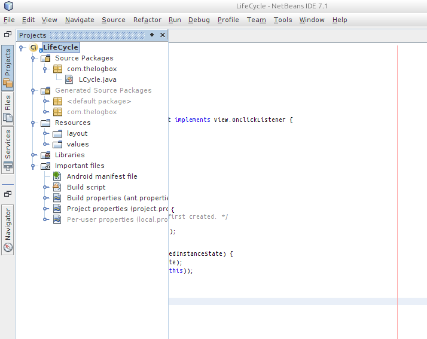
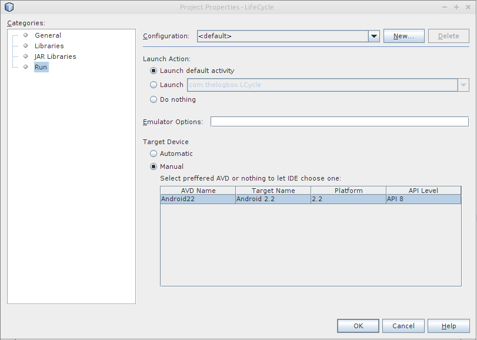

Netbeans development environment
Environment setup
Make sure you have already installed the ANDROID SDK and that you have properly configured the PATHs to tools and platform-tools. Make sure also that you have properly installed and configured Apache ANT.
Download Netbeans from netbeans.org, install it. The installation is straightforward, just follow the prompts.
Install the NBAndroid plugin
- Open Netbeans, go to Tools
- Go to Plugins
- Go to Settings
- Click Add
- Put whatever you like on Name field, I suggest NBAndroid
- Put http://kenai.com/projects/nbandroid/downloads/download/updatecenter/updates.xml on the URL. This URL might change in the future, when that happens, visit the Kenai/NBAndroid/Wiki, I’m sure they will do a better job of keeping URLs updated than I will
- The Android option should now be visible from the Available plugins tab — if it does not show up, try to reload the catalog
- Continue with the installation of the plugin
- Go to Tools then Options, click the Android tab. Fill in the location of the folder (dir) where you installed the Android SDK. Click Ok when you’re done
- You will see the android option when you create a new project
Creating a project
On the menu bar, click File → New Project, Choose Android then Android Test project. Fill in the project name, project location, set it as main project.
Fill up the package name. The package name is usually a reverse DNS notation of your domain, say com.thelogbox, it doesn’t have to exist so you can put whatever you want. Fill up also the name of your main activity class. Think of an Activity class as the main(first) user interface that your users will see on your application. Click Finish
Testing
Compile the project (Build project in netbeans). This is on the Run menu. When the build is successful, run the project (F11 is the key), this is also under the Run menu.
Netbeans will ask you to setup an AVD (Android Virtual Device), it is an emulator where you can run and test your Android projects. There are more instructions on how to create an manage AVDs on the [developer.android.com/devices] page.
Testing with Physical Devices
There are two parts to testing the physical devices. First, you must have correctly setup the USB configuration of the Android physical device on your platform. The other part is how to tell Netbeans that you want to use the physical device instead of the AVD.
If you are using OSX, you don’t have to do anything but to simply enable USB debugging on your physical device then plug it in.If you are using Windows or Linux for development, you need to read how to setup a device for development on the Android developer site.
Netbeans automatically launches the configured AVD when you click Run, at least on Netbeans 7.1 that is how it behaved. In order to use the android physical device as a target of the build, you need to.
- Open the Android project you just created
- From the Projects tab, right click on the main android project
- Choose Properties (there are some pictures below)
- Choose the Run option (there are some pictures below)
- The Target Device is setup to Automatic, you need to change that to Manual so that you can choose the physical device attached when you Build/Run your project
If you want to automatically deploy to the attached physical device always, then just remove all the AVD definitions on the Android SDK and AVD manager. After that, you can set the Target Device to Automatic on the Netbeans Run options
Netbeans Project Properties

Netbeans Project Properties::Run

References
- developer.android.com/AVD - Managing AVDs. Google, 2013
- developer.android.com/tools/device - Setting up USB devices for Android testing. Google, 2013